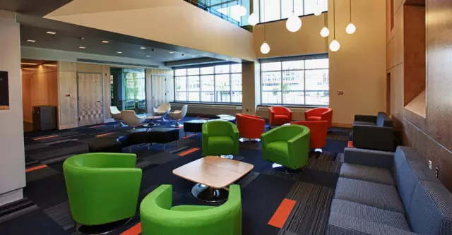
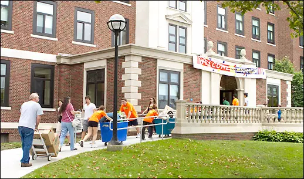
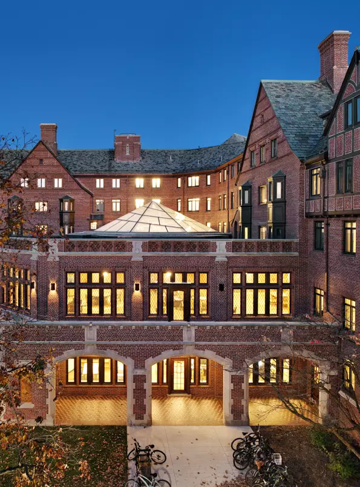
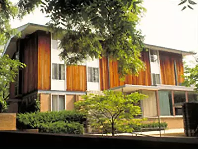

10. Alice Lloyd Hall
地址：100 Observatory Street
简介：设施很新，环境很好很温馨，study lounge 和休息室大气宽敞，房间大小适中，配备空调。宿舍没有自己的食堂，吃饭要去旁边的 Mojo 的 Market Place。有两个6人套间和一个8人套间提供。有舞蹈教室，音乐练习室等。
推荐指数：四星半
（图片来源：ids-troy.com/）
11. Couzens Hall
地址：1300 E. Ann Street
简介：和 Alice Lloyd 一样，也是翻新过不久，娱乐设施齐全，乒乓球，台球，桌上足球，游戏机应有尽有，房间舒适，大小适中，只有double和single，拥有公用厨房，但没有自己的食堂。门口有直达北校的公交车，也有到中校的commuter south，走到中校大概也只需要10min。是 Health Sciences Scholars Program (HSSP)项目的宿舍。
推荐指数：四颗星
（图片来源：ur.umich.edu）
12. Mosher‐Jordan Hall
地址：200 Observatory Street
简介：环境舒适，设施齐全，可以在 Market Place 和 Victors 用餐，靠近 CCRB 健身房，房间配备空调，Michigan Research Community 的同学都住在此宿舍，宿舍还提供公用厨房。
推荐指数：四星半
（图片来源：goodyclancy.com）
13. Mary Markley Hall
地址：1503 Washington Heights
简介：专门给大一新生提供宿舍，设施齐全，不是很新，周末随处可见去 party 的美国人，有自己的食堂，但因为提供数量有限，所以先到先得。
推荐指数：三星半
（图片来源：campusinfo.umich.edu）
14. Stockwell Hall
地址：324 Observatory
简介：公共区域和房间都很温馨舒适，60%的房间是 single，但不提供给大一学生。有公用厨房，study lounge 数个，没有自己的食堂，但离 Mojo 很近，离CCRB 也非常近。
推荐指数：五颗星
（图片来源：goodyclancy.com）
15. Oxford Houses
地址：623 Oxford Road
简介：由八幢小楼组成的学生宿舍，主要是新生住在这里，房型主要是 double 和 suite。附近可以乘 Oxford 线的 Blue Bus 去中校，如果走路需要五到十分钟。有自己新装修的食堂，而且伙食不错。
推荐指数：三星半
(图片来源：freshmansupport.com)